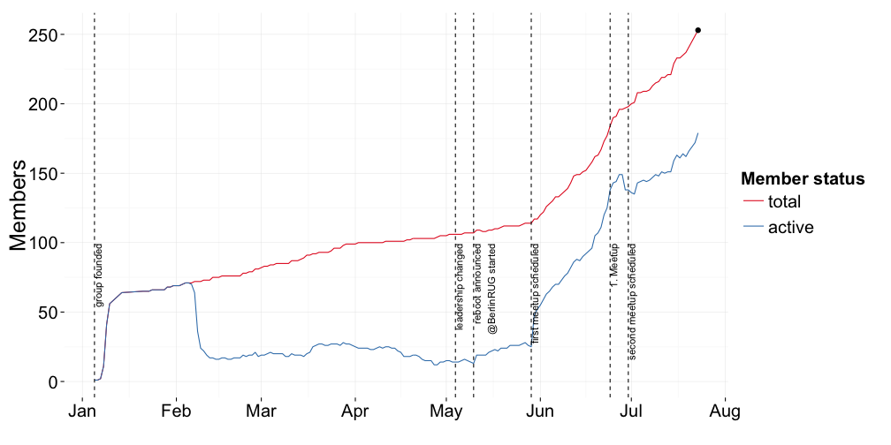
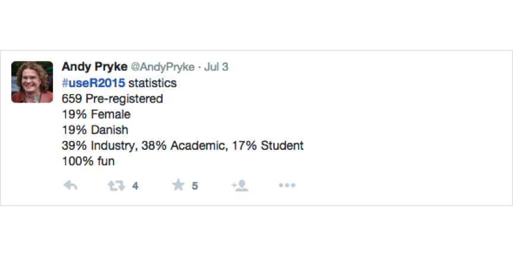

2. Meetup of the Berlin R Users Group
2015-07-23 @ Microsoft Berlin Digital Eatery (Berlin, DE)
Konstantin Greger
Schedule for today
| Time | What's happening |
|---|---|
| 19:00 | doors open |
| 19:15 | Konstantin Greger (@kogreger): "Welcome address and brief introduction" |
| 19:20 | Berry Boessenkool (@berryboessenkoo): "Shiny Apps for Interactive Graphics" |
| 19:35 | Rick Scavetta (@Rick_Scavetta): "Some New Data Vis Tools in R - visR! 2015" |
| 19:50 | Konstantin Greger (@kogreger): "Spatial Analysis in R" |
| from ~20:05 | socializing & networking |
| 22:00 | doors close |
Our group sponsors

Number of group members

distributed matters @Berlin (Sept 18-19)
10th anniversary event of NoSQL matters. Adding several new topics to the theme and rebranding to distributed matters. The conference covers topics like: Distributed systems, Microservices, DCOS, Cloud Management, Database solutions, DevOp operations and, of course, NoSQL and Big Data.
Training day (18.09.15) -> http://bit.ly/BERtrainigs Conference day (19.09.15) -> http://bit.ly/BER_Home
Conference day will be opened by the legendary KYLE KINGSBURY (@aphyr - the author of “Call Me Maybe” project). Followed by Salvatore Sanfilippo (Pivotal), Charity Majors (Parse / Facebook), Oliver Hardt (Bitly), Joe Nash (Braintree/PayPal) and more.
Get your special discounted Early Bird ticket (1 day conf) or Early Bird Combi (training day + conf) until 26th July 2015 -> http://bit.ly/BERtickets
After 26th July use the code "BerlinR_UG_2015"" to get 20% off.
!! Raffle for 1 FREE TICKET for BerlinRUG members -> send message to Konstantin by 31st July to be eligible !!
EARL 2015 Conference London (Sept 14-16)
Effective Applications of the R Language
2015 Keynote Speakers: Alex Bellos, Joe Cheng, Dirk Eddelbuettel and Hannah Fry
Register at http://www.earl-conference.com/ and follow @earlconf
useR! Conference 2015

More stats and insights in excellent blog post by Torben Tvedebrink (chair of local committee, useR! 2015)
On R User Groups
Joe Rickert (Microsoft): "R User Groups - Building Community at the Local Level"
What does it take for a group of people to be a community?
- Intentional involvement
- A shared set of positive goals
- Interactions that take place over time
- Committed members
- Contributions to the general welfare
Thomas Lumley (R Core): "R is a free software community for statistical computing and graphics"
Schedule for today
| Time | What's happening |
|---|---|
| 19:00 | doors open |
| 19:15 | Konstantin Greger (@kogreger): "Welcome address and brief introduction" |
| 19:20 | Berry Boessenkool (@berryboessenkoo): "Shiny Apps for Interactive Graphics" |
| 19:35 | Rick Scavetta (@Rick_Scavetta): "Some New Data Vis Tools in R - visR! 2015" |
| 19:50 | Konstantin Greger (@kogreger): "Spatial Analysis in R" |
| from ~20:05 | socializing & networking |
| 22:00 | doors close |